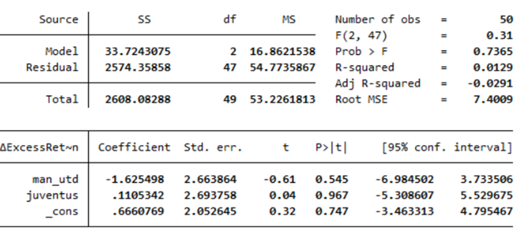

Selected Projects
Each project includes a short video demo. Keep demos under 90 seconds and focus on problem, architecture, your implementation, and measurable results.
Live Web App
C++ Stock Market Simulation
High-performance exchange simulator with order matching engine, median price reporting, trader analytics, and time-traveler strategy output.
- Built with C++17, priority queues, and custom CLI flags
- Demo should show compile, run, and key outputs on sample inputs
Launch Stock Simulator
Live Web App
Full-Stack Social Media Platform
Instagram-style app using React + Flask + SQLite with authentication, posts/comments/likes, and infinite scrolling feed via REST APIs.
- React frontend with paginated API-driven feed
- Flask backend with session auth and media uploads
Launch Social Web App
Note: Free-tier hosting may take 30-60 seconds on first load.
Video Demo
Distributed MapReduce Framework
Python manager-worker architecture with CLI job submission, configurable mapper/reducer executables, and socket-based message passing.
- Distributed systems concepts: scheduling, coordination, parallel workers
- Demo should show multi-worker run and output generation
Add architecture demo video
Live Web App
Scalable Search Engine
Multi-service search system with segmented index servers and a Flask search frontend, combining tf-idf relevance and PageRank-style ranking.
- Pipeline includes index building, API-based retrieval, and ranked results rendering
- Deployed as a process-coordinated demo service for recruiter walkthroughs
Add live search demo URL
Research Project
Economics Honors Research (ECON 495)
Built an automated data pipeline to scrape and reconstruct transfer market activity for publicly traded soccer clubs, then measured event-window market reactions and abnormal returns.
- Key findings - average delta excess return (2023/24 season):
- Dortmund +0.666%; Manchester United -0.959%; Juventus +0.777%
- Average outcomes - (delta market value, delta excess return) (2023/24):
- Juventus (+1.043%, +1.047%); Dortmund (-1.073%, -0.016%); Manchester United (-2.552%, -2.693%)
- Empirical pattern: when player value exceeded transfer fee + wage, clubs tended to see stronger market value and excess return outcomes.
- Future direction: add NLP-based rumor credibility signals to improve forecasting of market sentiment and valuation shifts.

Read research paper (PDF)
Academic citation or reuse requires author permission. Educational review only; all rights reserved.